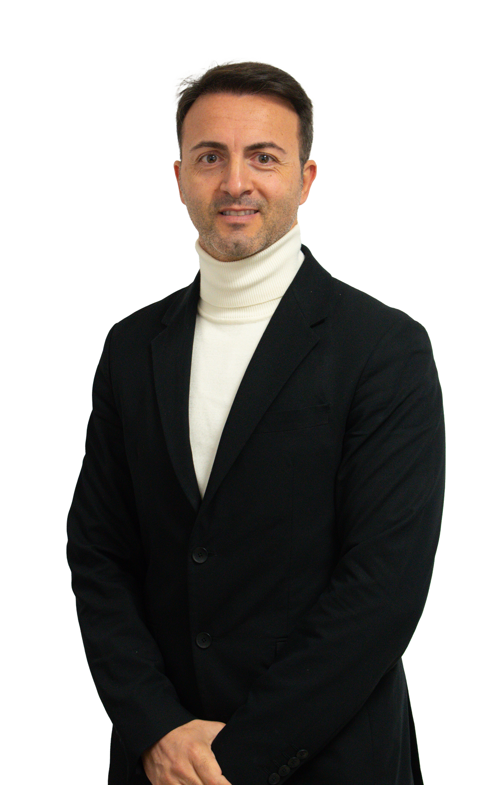

DOMENICO RUSCIANO · CEO DI EDIL FORTE
Costruire valore.
Dare forma
al futuro.
Una storia di famiglia.
Una visione contemporanea dell’abitare.

LA PERSONA DIETRO LA VISIONE01 / IL PROFILO
Domenico
Rusciano.
CEO di Edil Forte
Radici solide.
Lo sguardo rivolto a ciò che verrà.
Alla guida di Edil Forte dal 2013, Domenico Rusciano porta avanti una storia imprenditoriale iniziata nel 1982. Un percorso che unisce l’esperienza di famiglia a una nuova attenzione per l’efficienza energetica, i materiali e la qualità dell’abitare.
IL MODO DI COSTRUIRE
L’esperienza è la base.
La visione fa la differenza.
Ascolto
Ogni progetto parte dalle persone e dalle loro esigenze.
Qualità
Esperienza e attenzione ai dettagli, dall’idea alla realizzazione.
Sostenibilità
Materiali e tecnologie per un’edilizia attenta al domani.
02 / LA VISIONE PRENDE FORMA
Progetti che
parlano di noi.

03 / UN CONTATTO DIRETTO
Il prossimo progetto
inizia con una
conversazione.
Un’idea, un incontro, una nuova possibilità.
Parliamone insieme.